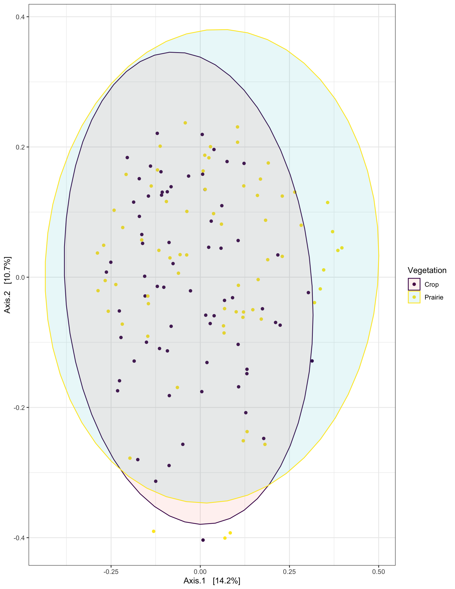
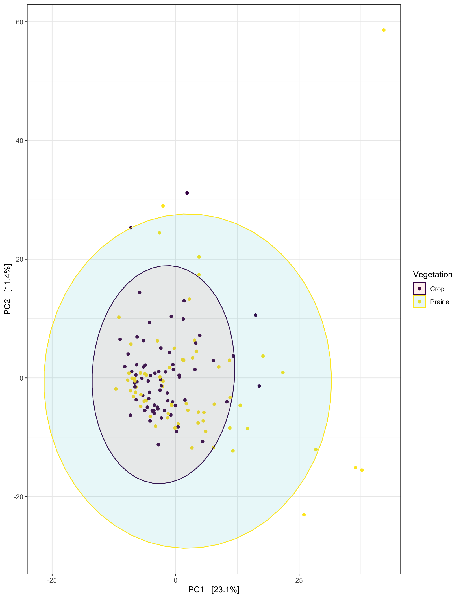
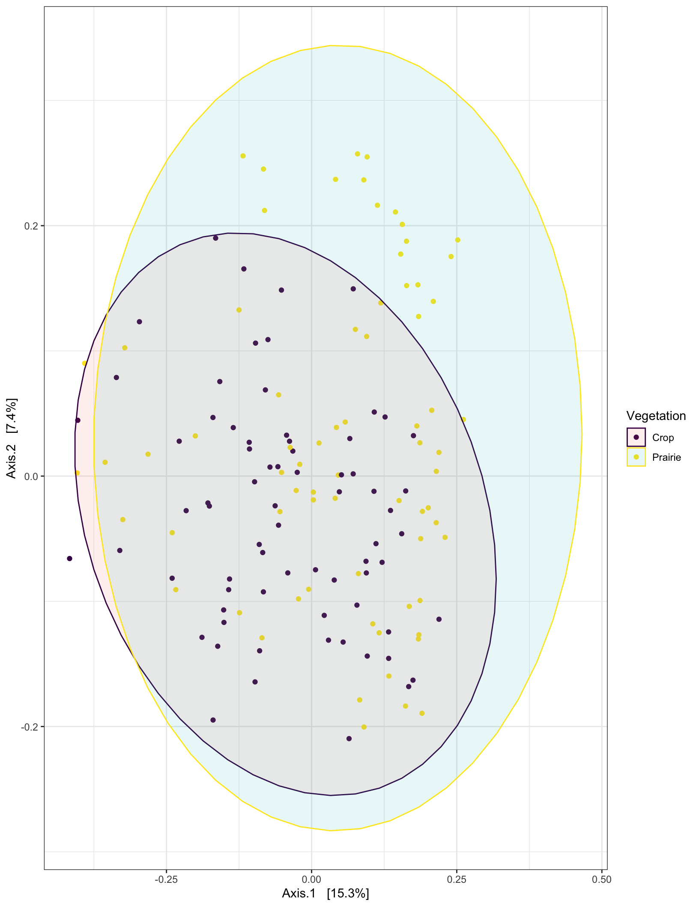
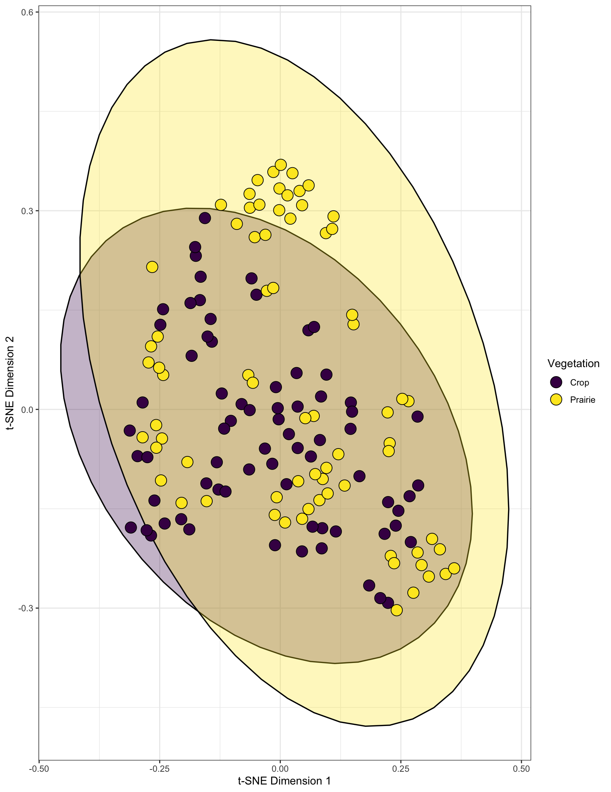
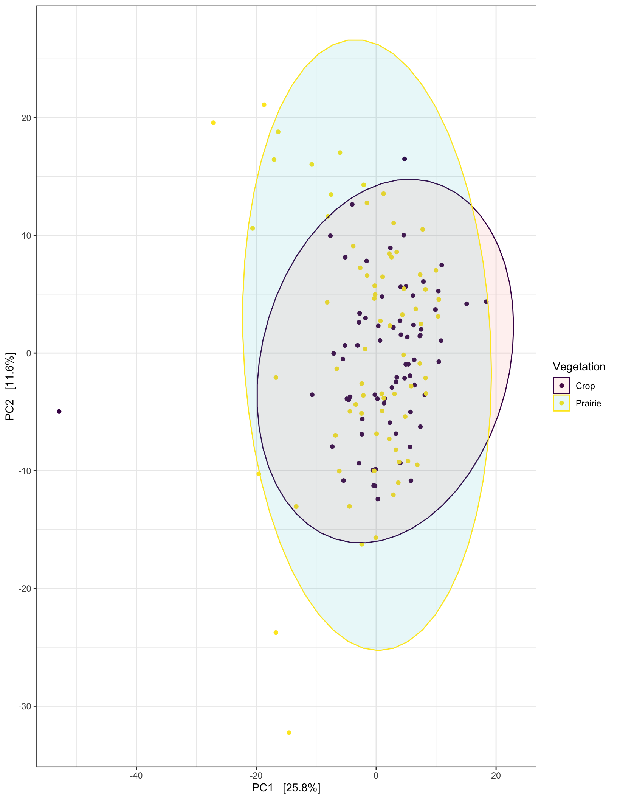

## ── Attaching packages ─────────────────────────────────── tidyverse 1.2.1 ──## ✔ ggplot2 3.2.1 ✔ purrr 0.3.2
## ✔ tibble 2.1.3 ✔ dplyr 0.8.3
## ✔ tidyr 0.8.3 ✔ stringr 1.4.0
## ✔ readr 1.3.1 ✔ forcats 0.4.0## ── Conflicts ────────────────────────────────────── tidyverse_conflicts() ──
## ✖ dplyr::filter() masks stats::filter()
## ✖ dplyr::lag() masks stats::lag()## Loading required package: viridisLite## Loading required package: permute## Loading required package: lattice## This is vegan 2.5-5phy <- readRDS("./data/RDS/worle_with_meta.RDS")
data <- data.frame(sample_data(phy)) %>%
filter(matrix == "soil") %>%
mutate(Vegetation = case_when(in_plot_location %in% c("s1", "s2", "s3", "s4") ~ "Crop",
in_plot_location %in% c("s6", "s7", "s8", "s9") ~ "Prairie",
TRUE ~ "Border"))
all_data <- data.frame(sample_data(phy)) %>%
full_join(data)
all_data <- all_data %>%
mutate(day = replace(day, day == 't2', "t02"))
rownames(all_data) <- all_data$id
sample_data(phy) <- all_dataVisualizing with ordinations is one method of describing bacterial community variations, similarity, and dissimilarity.
The first question to ask is if crop soils are different from prairie soils, we will look at depth one of “no_manure_strip” treatment. This question is obviously more focused on elucidating the differences in crop and prairie in agroecosystems with PFS recently planted. This does not consider manure treatment.
# Subset to desired samples and remove ASVs observed once
PvCd1 <- subset_samples(phy, matrix == "soil" & treatment == "no_manure_strip" & depth == "d1" & !in_plot_location == "s5") %>%
filter_taxa(function(x) sum(x) >= 1, T)Calculate dissimilarity between soil vegetation samples from depth 1 of no_manure_strip and plot the ordination using “bray-curtis”
phy.ord.bray <- ordinate(PvCd1, method = "PCoA", distance = "bray")
plot_ordination(PvCd1, phy.ord.bray, color = "Vegetation") +
stat_ellipse(geom = "polygon", type = "norm", alpha = 0.1, aes(fill = Vegetation)) +
scale_colour_viridis_d() + ggplot2::theme_bw() +
guides(fill=guide_legend(title="Vegetation"))
adonis(phyloseq::distance(PvCd1, method = "bray") ~ Vegetation, data = data.frame(sample_data(PvCd1)))##
## Call:
## adonis(formula = phyloseq::distance(PvCd1, method = "bray") ~ Vegetation, data = data.frame(sample_data(PvCd1)))
##
## Permutation: free
## Number of permutations: 999
##
## Terms added sequentially (first to last)
##
## Df SumsOfSqs MeanSqs F.Model R2 Pr(>F)
## Vegetation 1 0.6485 0.64853 3.3327 0.02392 0.001 ***
## Residuals 136 26.4654 0.19460 0.97608
## Total 137 27.1139 1.00000
## ---
## Signif. codes: 0 '***' 0.001 '**' 0.01 '*' 0.05 '.' 0.1 ' ' 1tsne_phyloseq(PvCd1, treatment = c('Vegetation'), perplexity = 10, circle = TRUE, colors = 'default') +
scale_fill_viridis(discrete = T, option = "viridis") + ggplot2::theme_bw() +
guides(fill=guide_legend(title="Vegetation"))## Scale for 'fill' is already present. Adding another scale for 'fill',
## which will replace the existing scale.Hellinger transformation using vegan, this transformation gives low weights to variables with low counts and many zeros. The transfromation itself comprises dividing each value in a data matrix by its row sum, and taking the square root of the quotient. More information on this can be found here: GUSTA ME
# source functions
# contains function for converting to vegan OTU table
source("code/functions.R")dis <- vegdist(decostand(veganotu(PvCd1), "hell"), "euclidean")
ord.dis <- ordinate(PvCd1, method = "RDA", distance = dis)
plot_ordination(PvCd1, ord.dis, color = "Vegetation") +
stat_ellipse(geom = "polygon", type = "norm", alpha = 0.1, aes(fill = Vegetation)) +
scale_colour_viridis_d() + ggplot2::theme_bw() +
guides(fill=guide_legend(title="Vegetation"))
adonis(dis ~ Vegetation, data = data.frame(sample_data(PvCd1)))##
## Call:
## adonis(formula = dis ~ Vegetation, data = data.frame(sample_data(PvCd1)))
##
## Permutation: free
## Number of permutations: 999
##
## Terms added sequentially (first to last)
##
## Df SumsOfSqs MeanSqs F.Model R2 Pr(>F)
## Vegetation 1 1.160 1.16017 2.5581 0.01846 0.001 ***
## Residuals 136 61.679 0.45352 0.98154
## Total 137 62.839 1.00000
## ---
## Signif. codes: 0 '***' 0.001 '**' 0.01 '*' 0.05 '.' 0.1 ' ' 1# Subset to desired samples and remove ASVs observed once
PvCd2 <- subset_samples(phy, matrix == "soil" & treatment == "no_manure_strip" & depth == "d2" & !in_plot_location == "s5") %>%
filter_taxa(function(x) sum(x) >= 1, T)phy.ord.bray2 <- ordinate(PvCd2, method = "PCoA", distance = "bray")
plot_ordination(PvCd2, phy.ord.bray2, color = "Vegetation") +
stat_ellipse(geom = "polygon", type = "norm", alpha = 0.1, aes(fill = Vegetation)) +
scale_colour_viridis_d() + ggplot2::theme_bw() +
guides(fill=guide_legend(title="Vegetation"))
adonis(phyloseq::distance(PvCd2, method = "bray") ~ Vegetation, data = data.frame(sample_data(PvCd2)))##
## Call:
## adonis(formula = phyloseq::distance(PvCd2, method = "bray") ~ Vegetation, data = data.frame(sample_data(PvCd2)))
##
## Permutation: free
## Number of permutations: 999
##
## Terms added sequentially (first to last)
##
## Df SumsOfSqs MeanSqs F.Model R2 Pr(>F)
## Vegetation 1 0.7559 0.75589 4.4708 0.03052 0.001 ***
## Residuals 142 24.0082 0.16907 0.96948
## Total 143 24.7641 1.00000
## ---
## Signif. codes: 0 '***' 0.001 '**' 0.01 '*' 0.05 '.' 0.1 ' ' 1tsne_phyloseq(PvCd2, treatment = c('Vegetation'), perplexity = 10, circle = TRUE, colors = 'default') +
scale_fill_viridis(discrete = T, option = "viridis") + ggplot2::theme_bw() +
guides(fill=guide_legend(title="Vegetation"))## Scale for 'fill' is already present. Adding another scale for 'fill',
## which will replace the existing scale.
dis2 <- vegdist(decostand(veganotu(PvCd2), "hell"), "euclidean")
ord.dis2 <- ordinate(PvCd2, method = "RDA", distance = dis2)
plot_ordination(PvCd2, ord.dis2, color = "Vegetation") +
stat_ellipse(geom = "polygon", type = "norm", alpha = 0.1, aes(fill = Vegetation)) +
scale_colour_viridis_d() + ggplot2::theme_bw() +
guides(fill=guide_legend(title="Vegetation"))
adonis(dis2 ~ Vegetation, data = data.frame(sample_data(PvCd2)))##
## Call:
## adonis(formula = dis2 ~ Vegetation, data = data.frame(sample_data(PvCd2)))
##
## Permutation: free
## Number of permutations: 999
##
## Terms added sequentially (first to last)
##
## Df SumsOfSqs MeanSqs F.Model R2 Pr(>F)
## Vegetation 1 1.475 1.47531 3.4601 0.02379 0.001 ***
## Residuals 142 60.546 0.42638 0.97621
## Total 143 62.021 1.00000
## ---
## Signif. codes: 0 '***' 0.001 '**' 0.01 '*' 0.05 '.' 0.1 ' ' 1